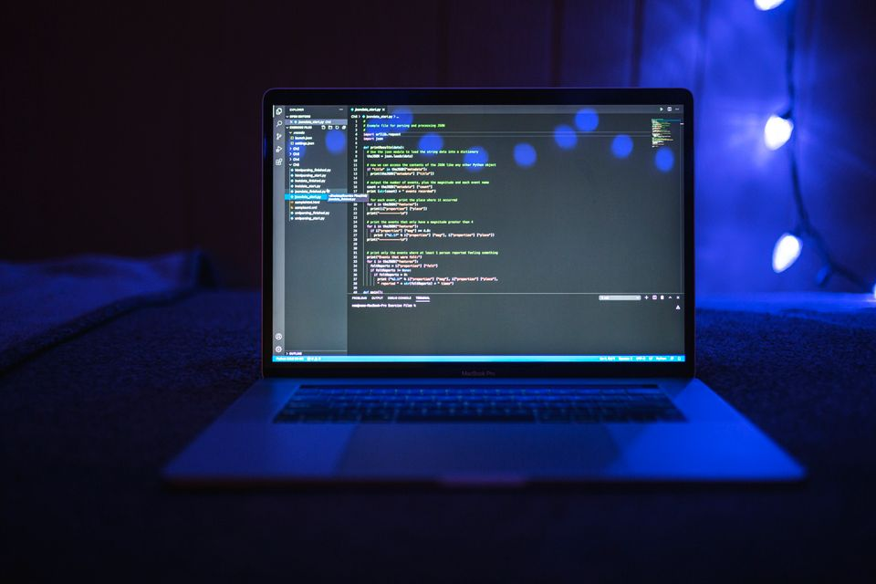
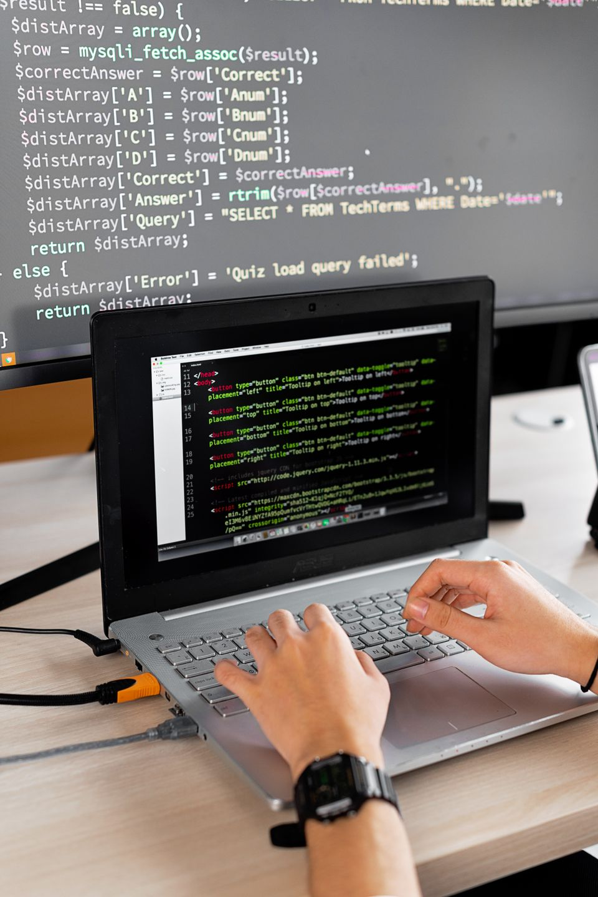

Маршрут обучения
Темы идут от простых к сложным, чтобы было понятно, что изучать дальше и зачем это нужно.
CodeStart помогает войти в программирование без лишней теории. Выбирай направление, решай небольшие задачи и собирай первые проекты в портфолио.
CodeStart - учебный проект о том, как превратить интерес к технологиям в системную практику и первые законченные работы.
Темы идут от простых к сложным, чтобы было понятно, что изучать дальше и зачем это нужно.
Каждый блок связан с небольшим результатом: страницей, скриптом или полезным инструментом.
Учебные проекты помогают закреплять материал и показывают, чему удалось научиться.
Можно начать с визуальной части сайта, перейти к логике или попробовать универсальный язык для автоматизации.
Создавай страницы, оформляй блоки и учись делать интерфейсы удобными.
Добавляй реакции на действия пользователя и оживляй интерфейсы.
Пиши понятные программы, обрабатывай данные и автоматизируй рутинные действия.
Не нужно знать всё заранее. Важно двигаться последовательно, проверять результат и исправлять ошибки.
Составить маршрутОпределяешь направление и небольшой результат, которого хочешь достичь.
Пишешь код, запускаешь его и учишься находить причины ошибок.
Сохраняешь проект, описываешь решение и понимаешь, что улучшить дальше.
Ниже приведены демонстрационные идеи учебных проектов. Их можно использовать как ориентир для собственной практики.

Структура страницы, карточки, кнопки и адаптация под экран смартфона.
Фото: Pexels
Интерактивный список, события, состояние элементов и простая логика.
Фото: PexelsНебольшая программа для обработки информации и автоматизации действий.
Фото: PexelsКороткие ответы на вопросы, которые часто возникают перед стартом.
Нет. Материал рассчитан на начинающих. Достаточно компьютера, браузера и готовности регулярно практиковаться.
Да. Удобно разбивать обучение на небольшие задачи и возвращаться к темам, которые требуют дополнительной практики.
Выбрать простую идею, определить минимальный результат, написать код и проверить его в браузере или среде разработки.
Оставь заявку, чтобы обозначить интересующее направление и получить примерный маршрут для старта.